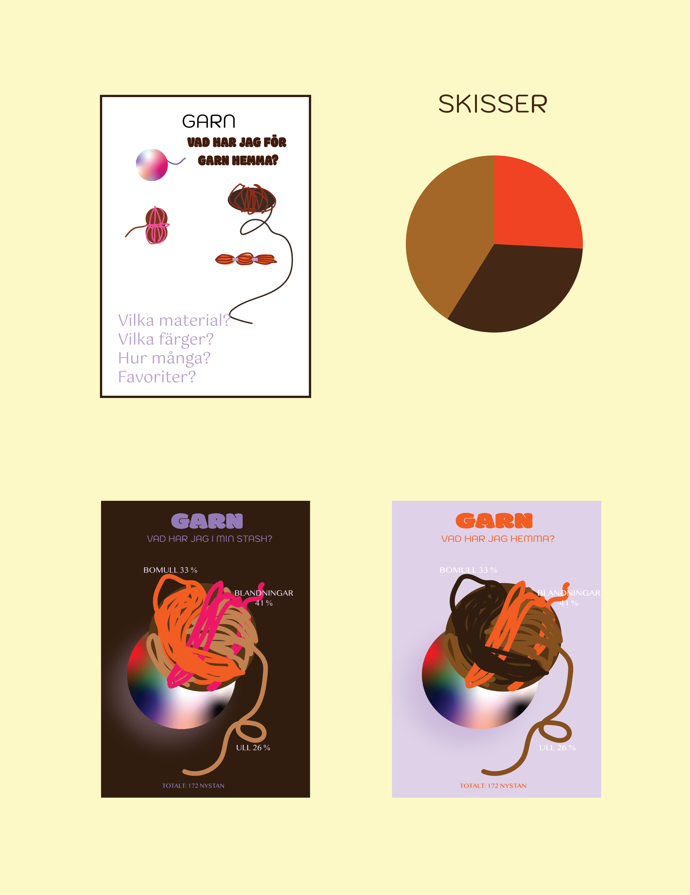
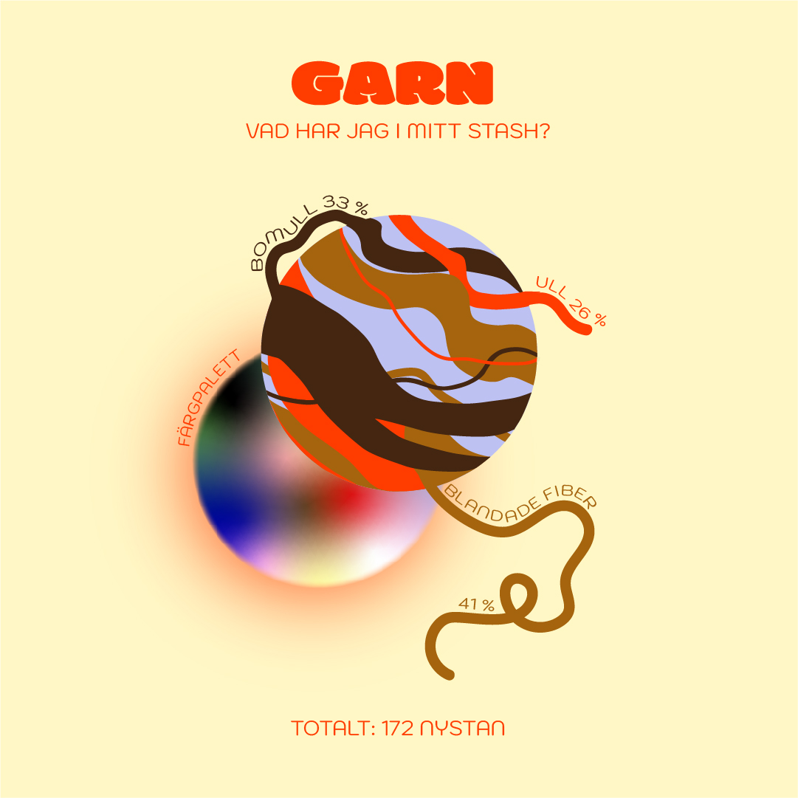
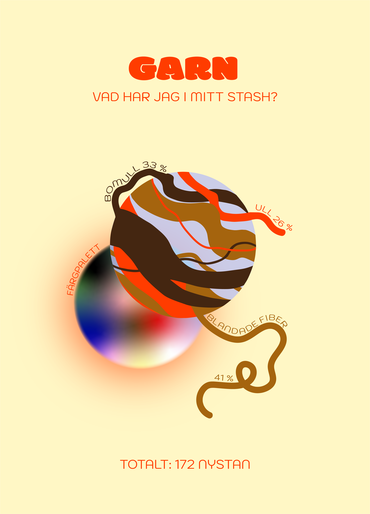

INFOGRAPHICS
Uppgiften var att skapa en infografisk illustration i illustrator. Inspirerad av 70-talsposters, philographics och chord diagrams gjorde jag en slags
graf om allt garn jag har hemma. Den data jag ville visualisera var material och färg. Jag ville undersöka hur långt jag kan pusha en graf innan det
blir ren illustration samt leka med olika ytor.


